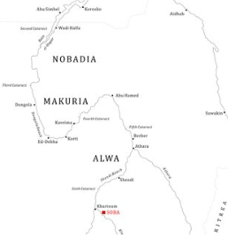
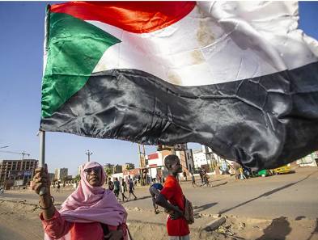
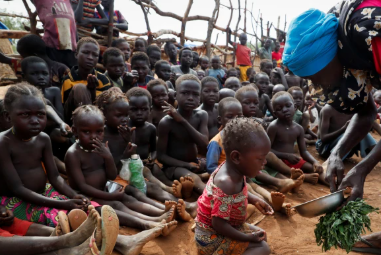

We have evidence of people living in Sudan as far back as 30,000-20,000 BCE. The people living in modern day Sudan wrote in hieroglyphs at first, but eventually developed their own cursive script.
In the 5th century AD, Christian missionaries split Sudan into Nobatia, Maqurrah, and Alwah in the South. They were all converted to Christianity. By the 1400s, middle easterners began to inhabit Sudan, and even gained political authority through birth right after they began to have children with the Sudanese. By the 16th and 17th centuries, much of the country began to practice Islam due to missionaries.
By the 1700s Sudan was one country. In the early 1800s, the viceroy of Egypt sent an army to acquire livestock, gold, and slaves. The taxes on these following the act wouldn’t be lightened until 1826. n 1897, the British decided that they needed to invade Sudan to protect the Nile from the French. Sudan was defeated by the British, and so they appointed their own governor-generals. He then proceeded to segregate the Christians in the North from the Muslims in the South, although it was quickly abandoned. In 1953 a Sudanese man won an election for parliament, and in 1956, he liberated Sudan from Egypt.
In 1959 there was a coup by Ibrahim Abbud, and he began to work on spreading Islam. In 1971 Nimeri was elected as the first president, and allowd for the new constitution to be based in part on Islam law. In 1983, he also made sure that the law was in accordance with Islam. This brought about rebellion in the Christian South, which he tried to squash. That lead to another coup, and peace resolutions between the North and the South began to be discussed. But in 1989, a Revolutionary Command Council for National Salvation was established., and they unleashed an army on the South to force them into Islam. In the process, they ignored requests for food and refused to allow humanitarian aid in.
A peace agreement had been reached in 2005, but by 2007 the terror resumed due to an attempted insurrection by the South, who said they hadn’t been being treated fairly. The North responded with militias and continued to not allow aid in. In 2008, they were charged with genocide. But today, with the conflict still raging under different leadership, 30.4 million people need aid, 14.4 million people total have been displaced.